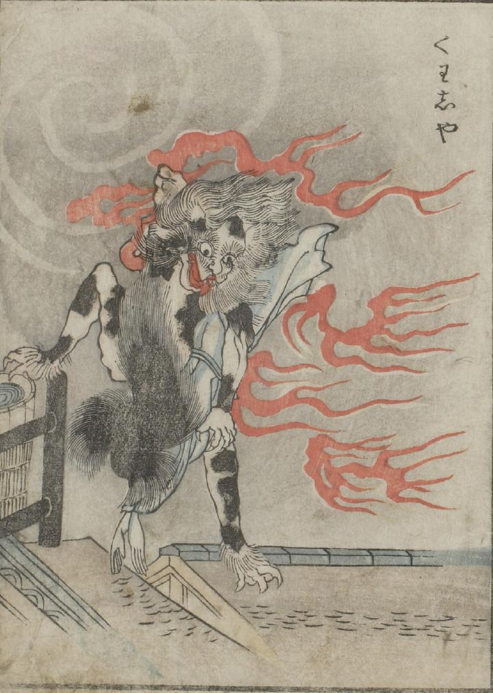

火車；カシャ，猫；ネコ，炎；ホノオ

渦巻く黒雲を背景に、屋根の上で火車が女の死体を抱えている。火車の周りには炎が噴出している。
出典：親書誌：U426_nichibunken_0051：怪物画本；カイブツエホン／日付：2006／資源識別子：U426_nichibunken_0051_0031_0000
Copyright (c)2010- International Research Center for Japanese Studies, Kyoto, Japan. All rights reserved.